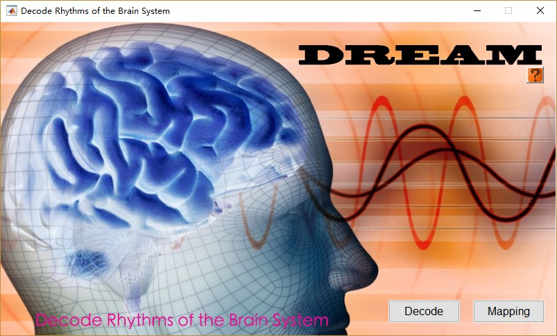

DREAM
Contents
1. Overview
2. Running inside Matlab
Command-line
Interface
3. Using DREAM
4. Input data Format
Brain Image
Head Motion Data
Other Format
5. Decode
6. Mapping
7.Result
DREAM --A Toolbox to Decode Rhythms of the Brain System
is a MATLAB-based toolbox which could decoding rhythms of the brain to seveal differents frequnency bands which decided by your own data.
You can add DREAM to MATLAB's path with following command:
>>addpath(genpath('E:\Brainsoft\DREAM'))
where 'E:\Brainsoft\DREAM' is the location of your DREAM.
1. Click ”Add with Subfolders...” button and select your DREAM path. i.e. "E:\Brainsoft\DREAM".
2. Save your change.
Typing DREAM at the prompt to active DREAM GUI
Please run DREAM as following steps:
1.You should first decode your data to compute frequency bands by Click Decode.
2.After divide your data by frequency you can map your data into several frequency bands by using Mapping function.

DREAM support fMRI sequences with compressed NIFTI format ending with '.nii.gz'
Head motion data should be organized into the follow format:
Roll = rotation about the I-S axis.
Pitch = rotation about the R-L axis.
Yaw = rotation about the A-P axis.
ZdS = displacement in the Superior direction.
XdL = displacement in the Left direction.
YdP = displacement in the Posterior direction.
The *.1D file should be contain 6 lines and n rows where n is your time points.
DRAM will support divding EEG, MEG and other type of data in a recent update.
Data Type: Choose your data type. e.g. NIFTI
Working Directory: Choose your working directory. e.g. E:\BrainData
Sublist: Choose a list file which contain all you subjects. e.g. E:\BrainData\sublist.list
TR(s): The time of repeat of data signal. e.g. 2
Data Dir: The name of data directory e.g. func
Data Name: The name of data. e.g. rest
After you finish data set, the filelist area would list all you data.
You can delete the file by double-click the data name in the filelist!
Data Type: Choose your data type. e.g. 1D
Choose a csv: Choose a .csv which made by step.1 e.g. E:\BrainData\sub001\frequency.csv
Select a frequency: Select the frequency band which you want e.g. 2
(If you want to get all frequency bands, input 0).
Decode:
After Decode, one folder is created in each subject's folder,
named by your chosen data name(without suffix).
The freqbands.csv contains all frequency bands decoded from your data.
Mapping:
After Mapping, some folders are created in each subject's folder
which name is same with your chosen data name(without suffix).
In these directories, *FBsn are created.
* is same with your chosen data name(without suffix)
n represent the number of frequency bands which you inputed in Mapping function.